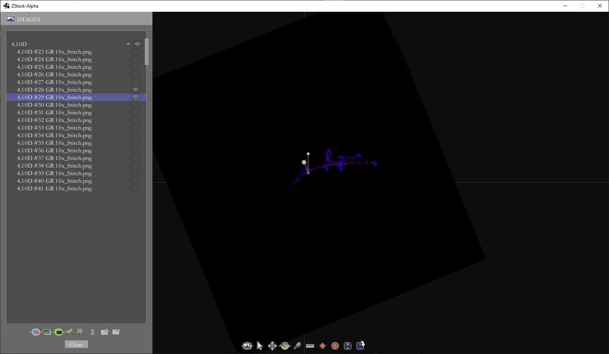

Objective
To create an application to help microscope images for the generation of 3D models.

An example of the output from the application.
Overview
Background
While working in Dr. Prausnitz's Drug Delivery Lab at Georgia Tech, one of my responsibilities was to perform histological analysis of our experiments on animal tissue. One machine I used was the confocal microscope.
A confocal microscope functions by emitting a laser through a fluorescently stained sample on a microscope slide and scanning the transmittance of light onto the microscope's sensor. The transmittance is mathematically converted into absorbance to generate the final image.
The Problem
A confocal microscope can generate a 3D model by taking multiple images from the same slide at different focuses. This is called a Z-Stack. However, the size of this 3D model is limited by how large of a sample can fit on the microscope slide. After about 50-100 um (that's 0.05 to 0.1 mm), too much light is occluded by the sample to make a ZStack. Our samples were ~1.5cm, about 100x this limit.
My solution
To obviate this issue, I presented the idea that if we take images of multiple tissue samples across multiple slides, I could write an application to align the images and generate the model myself. My proposal was approved, and this project was born.
Input
The input to my application was a series of microscope images with different size, rotation, and aligment but sharing the same magnification. An example collection of such images is provided below.
An example set of four input images. Each model was made from 40-60 images compiled together.
Processing
Challenges
The biggest challenge here was the sheer size of the images (for certain reasons, it was necessary to keep the full resolution output from the microscope for other purposes, even though the 3D models did not require the full resolution). I was dealing with approx. 300GB of images (disk-size, not size in memory) that needed to be rotated, aligned, cropped, and ultimately compiled into their models. The issue was that I did not have access to a computer with enough RAM to hold all the images for one model in memory simultaneously, a necessary requirement for ensuring the alignment was satisfactory.
Solution
My innovation to get around this issue was to instead align small thumbnail-sized versions of the images within my application and save the rotations, translations, and cropping for the small set of images. Then, I could programmatically scale those operations up to the full size images and process them overnight with a simple script.
GUI Application (in Java)
Borrowing some code from my level editors for Us and Quondam, I wrote an application with a GUI in which the user can align the thumbnail-sized images together and save the transformations necessary for aligning the full-scale images.
Two images unaligned. The selected image in blue, and the adjacent image in red.
The same to images after translation and rotation.
Large-scale Processing
To apply the transformation commands determined by the GUI Application shown above, I wrote a relatively simple MATLAB script making use of MATLAB's wonderfully optimized Image Processing Toolbox. The code still took many, many hours to run, but mostly due to the slow read/write times from disk compared to the processing times.
Final Product
After all the processing in my Java application and MATLAB script, a selection of now-aligned images could form an animated GIF showing the change in the x-y image over a change in the third axis, z.
An animated GIF showing the final aligned series of confocal images.
Generation of voxel model
Finally, by making use of the python package 'napari' and implementing something similar to Lorensen and Cline's marching cubes algorithm, a voxel model could be created to view the collection of images in 3D space. The model was colored blue to help improve visibility.